Молодые солдаты, готовые к мобилизации в федеральные войска в 1913 году. Фото Агустина Касасолы
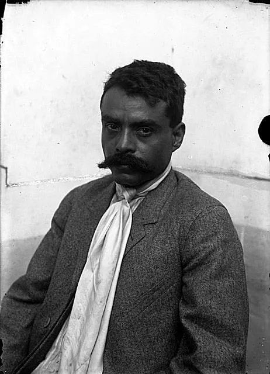Идеалист Мексиканской революции Эмилиано Сапата. Фото Агустина Касасолы
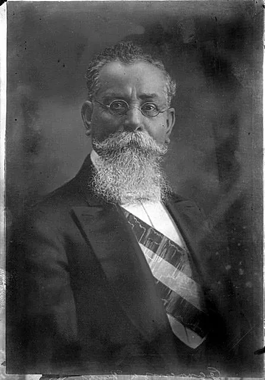Мексиканский Дон Кихот Венустиано Карранса. Фото Агустина Касасолы
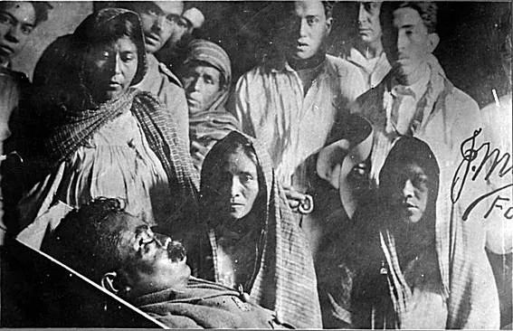Смерть Эмилиано Сапаты Смерть Эмилиано Сапаты. Фото Агустина Касасолы
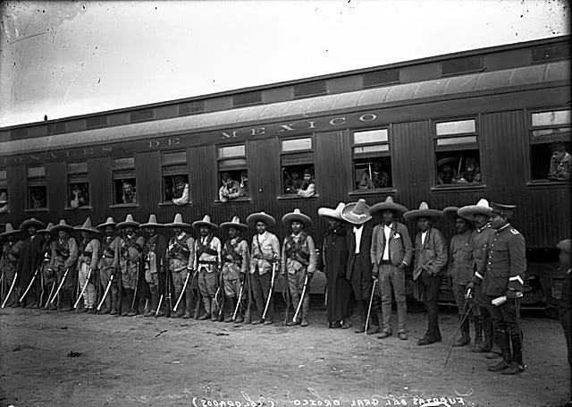Повстанческая армия Паскуаля Ороско в 1912 году. Фото Агустина Касасолы
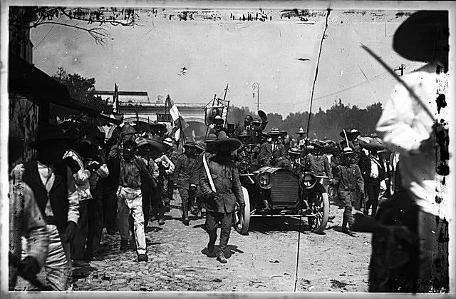Краткое обещание мира и перемен Франсиско Мадеро вступает в Куэрнаваку. Фото: Агустин Касасола
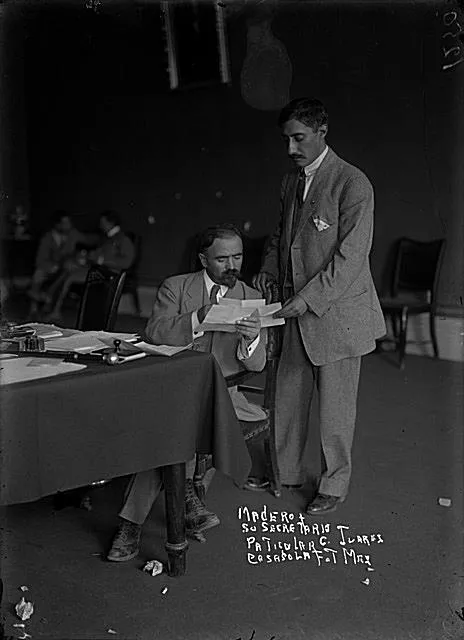Франсиско И. Мадеро и его личный ассистент в 1911 году. Фотограф неизвестен
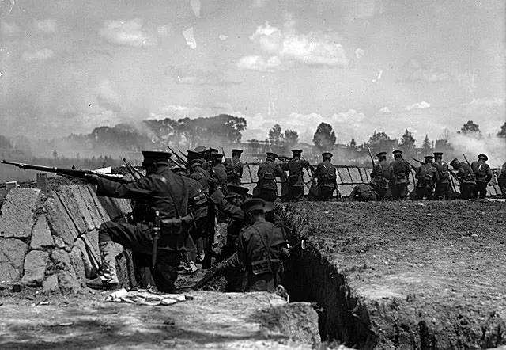Солдаты Федеральной армии, участвующие в Мексиканской революции, ведут огонь из окопа. Фото Агустина Касасолы
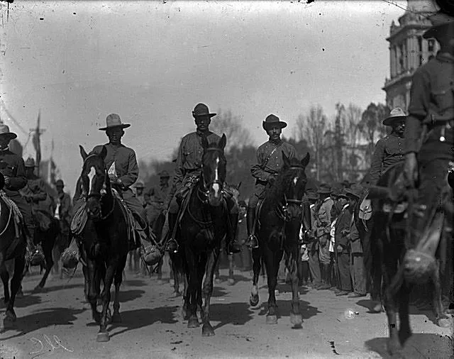Лучшие генералы Панчо Вильи, Фелипе Анхелес и другие командиры дивизии "Дель Норте". Фото Агустина Касасолы
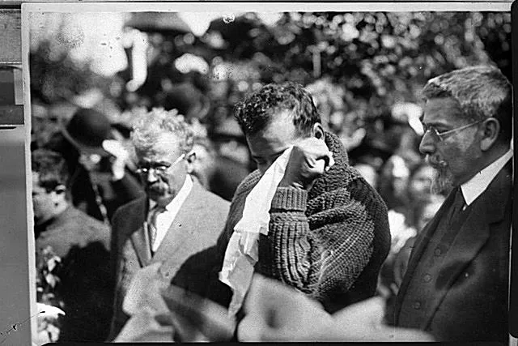Он знал, что впереди его ждут годы хаоса, и Панчо Вилья плачет у могилы Франсиско И. Мадеро. Фото Агустина Касасолы
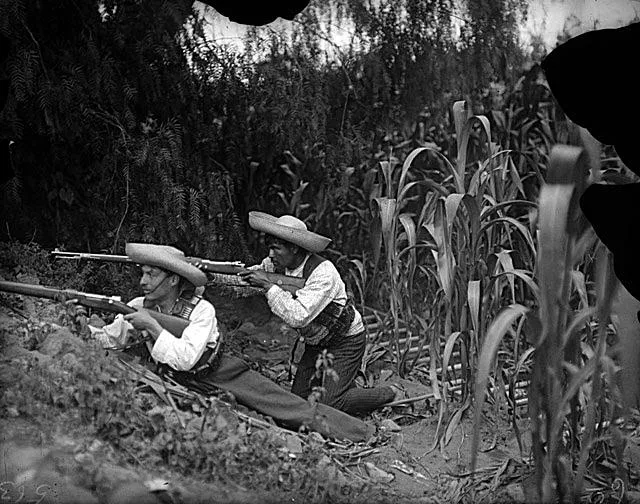Нерегулярная армия Сапаты сражалась из тени, сапатисты окопались на кукурузном поле. Фото Агустина Касасолы
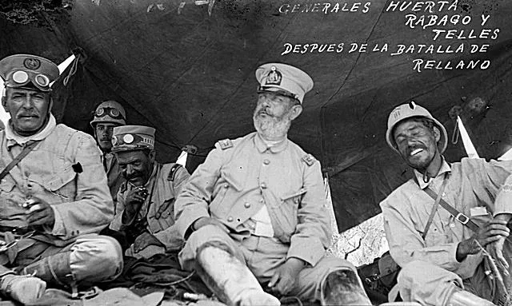Уэрта радуется скорой победе генералов Уэрты, Рабаго и Теллера после Второй битвы при Реллено. Фото Агустина Касасолы
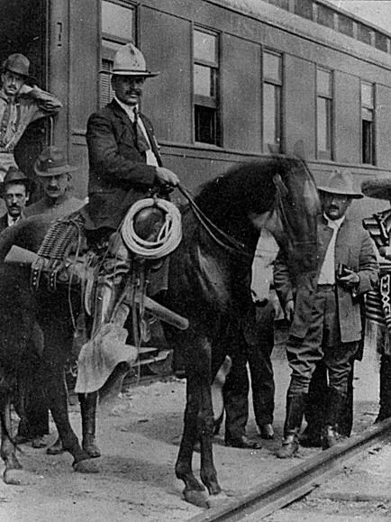Родольфо Фьерро, наемный убийца Панчо Вильи. Фото Агустина Касасолы
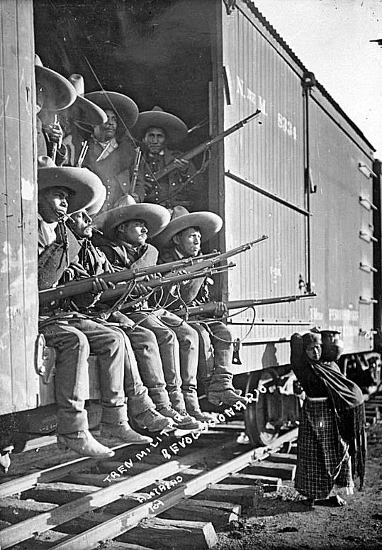Революционеры в поезде. Фотограф неизвестен